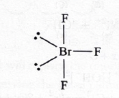
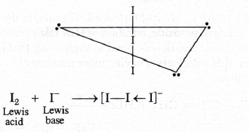

- Answer: \((b)\ BaCO_3 > SrCO_3 > CaCO_3 > MgCO_3\)
- Quick explanation: In Group 2, the thermal stability of carbonates increases down the group. So \(MgCO_3\) is least stable and \(BaCO_3\) is most stable.
-
Chapter / topic / subtopic:
Hydrogen and s-Block Elements \(\rightarrow\) s-Block Elements -
Page C100
Hydrogen and s-Block Elements \(\rightarrow\) Group 2 Elements - Page C103
Hydrogen and s-Block Elements \(\rightarrow\) Chemical Characteristics \(\rightarrow\) Thermal stabilities of carbonates - Page C103 - Solution: The given compounds are carbonates of Group 2 alkaline earth metals.
- In Group 2, the stability of carbonates increases as we move down the group from magnesium to barium.
- The increasing order of stability is: \(MgCO_3 < CaCO_3 < SrCO_3 < BaCO_3\)
- Therefore, the decreasing order of stability is the reverse: \(BaCO_3 > SrCO_3 > CaCO_3 > MgCO_3\)
- The reason is that smaller cations like \(Mg^{2+}\) have higher polarising power and destabilise the large \(CO_3^{2-}\) ion more strongly.
- As cation size increases down the group, polarising power decreases, so the carbonate ion is less distorted and the carbonate becomes more stable.
- So, \(BaCO_3\) is the most stable carbonate among the given options, and \(MgCO_3\) is the least stable.
- Final result: \((b)\ BaCO_3 > SrCO_3 > CaCO_3 > MgCO_3\)
-
Simple memory tip:
- Group 2 carbonates become more stable down the group.
- Big cation means less polarisation, so carbonate is more stable.
- For carbonates: \(MgCO_3\) least stable, \(BaCO_3\) most stable.
-
Why the other options are wrong:
- Option \((a)\) gives the opposite order.
- Options \((c)\) and \((d)\) mix the Group 2 order incorrectly.
- The correct decreasing order must start with \(BaCO_3\) and end with \(MgCO_3\).
-
Exam shortcut:
- For Group 2 carbonate stability, go down the group: \(Mg < Ca < Sr < Ba\).
- Since the question asks decreasing stability, write: \(BaCO_3 > SrCO_3 > CaCO_3 > MgCO_3\).
- Answer: \((a)\) epimers
- Quick explanation: Epimers are carbohydrates that differ in configuration at only one chiral carbon other than the anomeric carbon. Glucose and mannose differ at \(C_2\), so they are \(C_2\)-epimers.
-
Chapter / topic / subtopic:
Biological, Industrial and Environmental Chemistry
\(\rightarrow\) Biomolecules - Page C221
Biological, Industrial and Environmental Chemistry \(\rightarrow\) Carbohydrates - Page C221
Biological, Industrial and Environmental Chemistry \(\rightarrow\) Glucose, \(C_6H_{12}O_6\) - Page C221 - Solution: Glucose and mannose are both carbohydrates.
- They have the same molecular formula and the same general structure, but their arrangement around one specific chiral carbon is different.
- When two sugars differ in configuration at only one chiral carbon, other than the anomeric carbon, they are called epimers.
- Glucose and mannose differ in configuration around the second carbon, \(C_2\).
- Therefore, glucose and mannose are \(C_2\)-epimers.
- They are not anomers because anomers differ at the anomeric carbon, usually \(C_1\) in aldoses like glucose.
- They are also not ketohexoses, because glucose and mannose are aldohexoses.
- They are not disaccharides because both glucose and mannose are monosaccharides.
- Final result: \((a)\) epimers
-
Simple memory tip:
- Glucose and mannose differ at \(C_2\), so they are \(C_2\)-epimers.
- Glucose and galactose differ at \(C_4\), so they are \(C_4\)-epimers.
- Anomers differ at the anomeric carbon, not just any chiral carbon.
-
Why the other options are wrong:
- Anomers differ at the anomeric carbon, but glucose and mannose differ at \(C_2\).
- Ketohexoses contain a ketone group; glucose and mannose are aldohexoses.
- Disaccharides are made of two monosaccharide units, but glucose and mannose are individual monosaccharides.
-
Exam shortcut:
- Remember the common pair: glucose and mannose are \(C_2\)-epimers.
- If the question asks the relationship between these two, directly choose epimers.
- Answer: \((b)\) \(Na_2CO_3\)
- Quick explanation: Permanent hardness is mainly due to soluble salts of \(Ca^{2+}\) and \(Mg^{2+}\). Washing soda, \(Na_2CO_3\), removes it by forming insoluble carbonates like \(CaCO_3\) and \(MgCO_3\).
-
Chapter / topic / subtopic: Hydrogen and
s-Block Elements → Hydrogen and its Compounds Page C99
Water → Hardness of water → Removal of permanent hardness Page C99 - Key idea: Permanent hardness does not go away simply by boiling. It is removed by adding a chemical that precipitates \(Ca^{2+}\) and \(Mg^{2+}\) ions.
- \(Na_2CO_3\) supplies \(CO_3^{2-}\) ions. These carbonate ions combine with \(Ca^{2+}\) and \(Mg^{2+}\) ions to form insoluble carbonates.
- \(CaCl_2 + Na_2CO_3 \rightarrow CaCO_3 \downarrow + 2NaCl\)
- \(MgCl_2 + Na_2CO_3 \rightarrow MgCO_3 \downarrow + 2NaCl\)
- Final result: \(Ca^{2+}\) and \(Mg^{2+}\) are removed as precipitates, so hardness decreases.
- Simple memory tip: Permanent hardness → carbonate precipitate → add \(Na_2CO_3\), also called washing soda.
- Why the other options are wrong: \(Cl_2\) and \(Ca(OCl)Cl\) are mainly used for disinfection/bleaching, not for precipitating \(Ca^{2+}\) and \(Mg^{2+}\). \(K_2CO_3\) has carbonate, but the standard reagent used for removing permanent hardness is \(Na_2CO_3\).
- Exam shortcut: For permanent hardness, directly choose washing soda, \(Na_2CO_3\).
- Answer: \((d)\) \(2:1\)
- Quick explanation: At same volume and temperature, pressure is directly proportional to number of moles. Since both gases have equal mass, the gas with lower molar mass has more moles and therefore more pressure.
-
Chapter / topic / subtopic: States of Matter →
Gaseous State Page C5
Ideal gas equation \(pV=nRT\) → Relation between pressure and moles Page C5 - Formula used: \(pV=nRT\). Here \(V\), \(R\), and \(T\) are same, so \(p \propto n\).
- Number of moles \(n = \dfrac{w}{M}\), where \(w\) is mass and \(M\) is molar mass.
- Since both gases have the same mass, \(p \propto \dfrac{1}{M}\).
- Molar mass of \(CH_4 = 16\). Molar mass of \(O_2 = 32\).
- \(\dfrac{p_{CH_4}}{p_{O_2}} = \dfrac{M_{O_2}}{M_{CH_4}} = \dfrac{32}{16} = \dfrac{2}{1}\)
- Final result: Pressure ratio of \(CH_4:O_2 = 2:1\).
- Simple memory tip: Same mass + same \(V,T\) → pressure is inversely proportional to molar mass.
- Why the other options are wrong: They do not correctly use \(p \propto \dfrac{1}{M}\) for equal masses at same volume and temperature.
- Exam shortcut: For equal weights of gases at same \(V,T\), flip the molar masses to get the pressure ratio.
- Answer: \((b)\) a monosaccharide
- Quick explanation: Benedict's test is positive for reducing sugars such as many monosaccharides. Ninhydrin test is for amino acids, peptides, and proteins, so a negative ninhydrin test rules those out.
-
Chapter / topic / subtopic: Biological,
Industrial and Environmental Chemistry → Biomolecules Page
C221
Carbohydrates → Monosaccharides and reducing sugars Page C221
Proteins and amino acids → Ninhydrin test Page C224 - Benedict's test: It detects reducing sugars because they have a free aldehyde group or can form one in solution.
- Monosaccharides like glucose give a positive Benedict's test because they behave as reducing sugars.
- Ninhydrin test: It is given by amino acids, peptides, and proteins because they contain amino groups.
- The compound gives negative ninhydrin test, so it is not an amino acid or protein.
- The compound gives positive Benedict's test, so it is most likely a reducing sugar. Among the options, that is a monosaccharide.
- Final result: The compound is a monosaccharide.
- Simple memory tip: Benedict's → reducing sugar; ninhydrin → amino acid/protein.
- Why the other options are wrong: Amino acids and proteins usually give ninhydrin test. Lipids are not identified by Benedict's test as reducing sugars.
- Exam shortcut: Positive Benedict's + negative ninhydrin = carbohydrate, especially monosaccharide.
- Answer: \((d)\) Bakelite
- Quick explanation: Bakelite is a cross-linked condensation polymer made from phenol and formaldehyde. Teflon, polythene, and nylon are mainly straight-chain polymers.
-
Chapter / topic / subtopic: Biological,
Industrial and Environmental Chemistry → Polymers Page C225
Classification of polymers → Linear and cross-linked polymers Page C225
Bakelite Page C226 - Key idea: Cross-linked polymers have chains connected by strong links in different directions, making a rigid three-dimensional network.
- Bakelite is formed by condensation polymerisation of phenol and formaldehyde.
- Because of cross-linking, Bakelite is hard, rigid, and thermosetting.
- Teflon and polythene are addition polymers and are not the standard cross-linked example here.
- Nylon is a condensation polymer, but it is generally treated as a linear polymer, not a cross-linked polymer.
- Final result: Bakelite is the cross-linked polymer.
- Simple memory tip: Bakelite = phenol + formaldehyde = hard cross-linked thermosetting plastic.
- Why the other options are wrong: Teflon, polythene, and nylon are straight-chain polymers in this comparison.
- Exam shortcut: If the options include Bakelite and the question asks cross-linked or thermosetting polymer, choose Bakelite.
- Answer: \((b)\) \([NiCl_4]^{2-}\)
- Quick explanation: Spin-only magnetic moment is given by \(\mu = \sqrt{n(n+2)}\ \mathrm{BM}\), where \(n\) is the number of unpaired electrons. For \([NiCl_4]^{2-}\), \(Ni^{2+}\) is \(3d^8\), and weak field \(Cl^-\) gives two unpaired electrons, so \(\mu = \sqrt{2(2+2)} = \sqrt{8} = 2.82\ \mathrm{BM}\).
-
Chapter / topic / subtopic: d and f Block
Elements and Coordination Compounds → Magnetic Properties Page
C131
Coordination Compounds → Valence Bond Theory Page C139
Coordination Compounds → Crystal Field Theory Page C140 - Formula used: \(\mu = \sqrt{n(n+2)}\ \mathrm{BM}\).
- Given \(\mu = 2.82\ \mathrm{BM}\). Since \(2.82 = \sqrt{8}\), we need \(n(n+2)=8\). This happens when \(n=2\).
- So the correct complex must have exactly two unpaired electrons.
- In \([NiCl_4]^{2-}\), nickel is in \(+2\) oxidation state because \(4Cl^-\) contributes \(-4\) charge and the overall charge is \(-2\).
- \(Ni^{2+}\) has electronic configuration \(3d^8\).
- \(Cl^-\) is a weak field ligand, so it does not cause pairing of electrons strongly. Therefore \([NiCl_4]^{2-}\) remains high-spin with two unpaired electrons.
-

- Substituting \(n=2\): \(\mu = \sqrt{2(2+2)} = \sqrt{8} = 2.82\ \mathrm{BM}\).
- Final result: The complex is \([NiCl_4]^{2-}\).
- Simple memory tip: \([NiCl_4]^{2-}\) is tetrahedral, weak-field, and paramagnetic with two unpaired electrons.
- Why the other options are wrong: \(Ni(PPh_3)_4\) and \([Ni(CN)_4]^{2-}\) are diamagnetic cases. \([NiCl_4]^{2-}\) is the standard nickel complex with two unpaired electrons and magnetic moment \(2.82\ \mathrm{BM}\).
- Exam shortcut: If magnetic moment is \(2.82\ \mathrm{BM}\), immediately think \(n=2\) unpaired electrons. Among common nickel complexes, \([NiCl_4]^{2-}\) fits this.
- Answer: \((c)\) lone pair-lone pair repulsion and lone pair-bond pair repulsion
- Quick explanation: \(BrF_3\) has \(sp^3d\) hybridisation with trigonal bipyramidal electron-pair geometry. Its two lone pairs occupy equatorial positions because this arrangement reduces both lone pair-lone pair and lone pair-bond pair repulsions.
-
Chapter / topic / subtopic: Periodicity and
Bonding → Chemical Bonding → VSEPR Theory Page C34
Periodicity and Bonding → Chemical Bonding → Hybridization Page C35 - In \(BrF_3\), bromine has \(7\) valence electrons. It forms three \(Br-F\) bonds and still has two lone pairs.
- Total electron domains around bromine \(= 3\) bond pairs \(+ 2\) lone pairs \(= 5\). So the electron-pair arrangement is trigonal bipyramidal.
- In trigonal bipyramidal geometry, equatorial positions are less crowded than axial positions.
- Lone pairs prefer equatorial positions because lone pair-lone pair repulsion and lone pair-bond pair repulsion are stronger than bond pair-bond pair repulsion.
-

- After placing two lone pairs in equatorial positions, the remaining three fluorine atoms form a T-shaped molecule.
- Final result: The lone pairs occupy equatorial positions to minimise both lone pair-lone pair and lone pair-bond pair repulsions.
- Simple memory tip: In trigonal bipyramidal geometry, lone pairs love the equator.
- Why the other options are wrong: The reason is not only lone pair-bond pair repulsion or only lone pair-lone pair repulsion. Both types of repulsion matter in deciding the position of lone pairs in \(BrF_3\).
- Exam shortcut: \(AX_3E_2\) type molecule = \(BrF_3\) = T-shaped, with two equatorial lone pairs.
- Answer: \((a)\) decreases electron density at ortho-and para-positions
- Quick explanation: The \(-NO_2\) group is a strong electron-withdrawing group. It withdraws electron density strongly from the ortho and para positions, so electrophilic attack becomes comparatively more favourable at the meta position.
-
Chapter / topic / subtopic: Organic Chemistry -
Some Basic Principles, Techniques and Hydrocarbons →
Hydrocarbons → Aromatic Hydrocarbons
Electrophilic aromatic substitution → Directive influence of functional groups in monosubstituted benzene - In electrophilic aromatic substitution, the incoming electrophile attacks the position where electron density is comparatively higher.
- The nitro group, \(-NO_2\), is strongly electron withdrawing due to \(-I\) effect and \(-M\) effect.
- Because of resonance withdrawal, the ortho and para positions of nitrobenzene become electron-poor.
- The meta position is not made electron-rich in an absolute sense; it is only less electron-poor compared with the ortho and para positions.
- Therefore, electrophilic substitution occurs mainly at the meta position.
- Final result: \(-NO_2\) is meta-directing because it decreases electron density at ortho and para positions.
- Simple memory tip: \(-NO_2\), \(-CN\), \(-CHO\), \(-COOH\), and \(-COR\) are common meta-directing electron-withdrawing groups.
- Why the other options are wrong: The meta position is not specially made highly electron-rich. The main reason is that ortho and para positions are strongly deactivated by the nitro group.
- Exam shortcut: Nitrobenzene + electrophilic substitution = meta product.
- Answer: \((c)\) \(ZnH_2\)
- Quick explanation: \(NH_3\), \(CH_4\), and \(H_2O\) are covalent hydrides of non-metals. Among the given options, \(ZnH_2\) is taken as the interstitial hydride in the provided solution.
-
Chapter / topic / subtopic: Hydrogen and its
Compounds → Hydrides Page C99
d and f Block Elements and Coordination Compounds → Interstitial Compounds Page C132 - Hydrides are compounds of hydrogen with other elements.
- Covalent hydrides are formed when hydrogen combines with non-metals. Examples include \(NH_3\), \(CH_4\), and \(H_2O\).
- Interstitial hydrides are generally associated with metals, especially transition metals, where hydrogen occupies interstitial spaces in the metal lattice.
- In this question, \(ZnH_2\) is the only metal hydride-type option, while the other three are normal covalent hydrides.
- Final result: \(ZnH_2\) is selected as the interstitial hydride.
- Simple memory tip: \(NH_3\), \(CH_4\), and \(H_2O\) are non-metal covalent hydrides; the metal hydride option is the odd one out.
- Why the other options are wrong: \(NH_3\), \(CH_4\), and \(H_2O\) are covalent molecular hydrides, not interstitial hydrides.
- Exam shortcut: If three options are familiar covalent hydrides and one is a metal hydride, choose the metal hydride for interstitial hydride questions.
- Answer: \((c)\) A-3, B-1, C-2, D-4
- Quick explanation: Sodium perborate is used as a milk bleaching agent, chlorine is a disinfectant, bithional is an antiseptic, and potassium stearate is a soap.
-
Chapter / topic / subtopic: Biological,
Industrial and Environmental Chemistry → Chemistry in Everyday
Life Page C227
Cleansing agents, disinfectants, antiseptics and bleaching agents Page C228 - Sodium perborate: It is used as a bleaching agent. In this matching question, it is matched with milk bleaching agent.
- Chlorine: Chlorine is commonly used as a disinfectant, especially for water purification.
- Bithional: Bithional is used as an antiseptic.
- Potassium stearate: Potassium salts of fatty acids are soaps, so potassium stearate is matched with soap.
- Therefore, the matching is A-3, B-1, C-2, D-4.
- Final result: Correct option is \((c)\).
- Simple memory tip: Chlorine cleans germs, bithional is antiseptic, stearate means soap.
- Why the other options are wrong: They mismatch one or more standard uses, especially chlorine as disinfectant and potassium stearate as soap.
- Exam shortcut: First fix the easiest pair, potassium stearate = soap, so \(D=4\). Then chlorine = disinfectant, so \(B=1\). This directly gives option \((c)\).
- Answer: \((b)\) I and V
- Quick explanation: \(I_3^-\) is linear because the central iodine has three equatorial lone pairs and two axial bond pairs. \(N_3^-\), the azide ion, is also linear. \(NO_2^-\), \(SO_2\), and \(I_3^+\) are not linear here.
-
Chapter / topic / subtopic: Periodicity and
Bonding → Chemical Bonding Page C31
VSEPR Theory and Shapes of Molecules Page C34 - In \(I_3^-\), the central iodine has \(5\) electron domains: \(2\) bond pairs and \(3\) lone pairs.
- According to VSEPR theory, the three lone pairs occupy equatorial positions to reduce repulsion.
- The two iodine atoms bonded to the central iodine then remain in axial positions, giving a linear shape with bond angle \(180^\circ\).
-

- \(N_3^-\), the azide ion, is also linear because the atoms are arranged in a straight chain.
- \(NO_2^-\) and \(SO_2\) are bent due to lone-pair/resonance-based electron arrangement around the central atom.
- \(I_3^+\) does not have the same linear structure as \(I_3^-\) in this question.
- Final result: Linear species are I and V, so the answer is \((b)\).
- Simple memory tip: \(I_3^-\) and \(N_3^-\) are classic linear ions.
- Why the other options are wrong: Options containing \(NO_2^-\), \(SO_2\), or \(I_3^+\) are incorrect because these are not linear in this context.
- Exam shortcut: For \(AX_2E_3\)-type arrangement like \(I_3^-\), shape is linear.
- Answer: \((d)\) have tetrahedral and square planar geometry, respectively.
- Quick explanation: In \(Ni(CO)_4\), nickel is in \(0\) oxidation state and the complex is tetrahedral. In \([Ni(CN)_4]^{2-}\), nickel is in \(+2\) oxidation state, \(CN^-\) is a strong field ligand, and the complex is square planar.
-
Chapter / topic / subtopic: d and f Block
Elements and Coordination Compounds → Coordination Compounds
Page C136
Valence Bond Theory and Hybridisation of Complexes Page C139
Magnetic Properties and Geometry of Complexes Page C140 - In \(Ni(CO)_4\), carbon monoxide is a neutral ligand. So nickel has oxidation state \(0\).
- \(Ni(CO)_4\) has tetrahedral geometry.
- In \([Ni(CN)_4]^{2-}\), each \(CN^-\) has charge \(-1\). Total ligand charge is \(-4\), and overall complex charge is \(-2\), so nickel is in \(+2\) oxidation state.
- \(Ni^{2+}\) is \(3d^8\). \(CN^-\) is a strong field ligand and causes pairing of electrons.
- Therefore, \([Ni(CN)_4]^{2-}\) is \(dsp^2\)-hybridised, square planar, and diamagnetic.
- Final result: \(Ni(CO)_4\) is tetrahedral and \([Ni(CN)_4]^{2-}\) is square planar.
- Simple memory tip: \(Ni(CO)_4\) = tetrahedral; \([Ni(CN)_4]^{2-}\) = square planar.
- Why the other options are wrong: Nickel is not in the same oxidation state in both complexes. Both are not square planar, and the geometry order in option \((c)\) is reversed.
- Exam shortcut: \(CN^-\) is strong field, so \([Ni(CN)_4]^{2-}\) becomes square planar.
- Answer: \((b)\) II, III, I, IV
- Quick explanation: A weaker acid has a stronger conjugate base, and a stronger conjugate base usually acts as a stronger nucleophile. The acidic strength order of the corresponding acids is IV > I > III > II, so the nucleophilicity order is II > III > I > IV.
-
Chapter / topic / subtopic: Organic Chemistry -
Some Basic Principles, Techniques and Hydrocarbons → Organic
Chemistry Basics Page C151
Acids, bases and nucleophiles → Nucleophilicity and conjugate base strength Page C153 - The given nucleophiles are conjugate bases of different acids.
- I. \(CH_3COO^-\) is the conjugate base of \(CH_3COOH\).
- II. \(CH_3O^-\) is the conjugate base of \(CH_3OH\).
- III. \(CN^-\) is the conjugate base of \(HCN\).
- IV. \(p\)-toluenesulfonate ion is the conjugate base of \(p\)-toluenesulfonic acid.
- Strong acid gives weak conjugate base. Weak acid gives strong conjugate base.
- The acidic strength order is IV > I > III > II.
- Therefore, the conjugate base strength and nucleophilicity order becomes II > III > I > IV.
- Methoxide ion, \(CH_3O^-\), is the strongest nucleophile here because methanol is the weakest acid among the corresponding acids.
- Tosylate ion is the weakest nucleophile here because it is the conjugate base of a very strong sulfonic acid and is resonance-stabilised.
- Final result: Decreasing nucleophilicity order is II, III, I, IV.
- Simple memory tip: Strong acid's conjugate base is weak; weak acid's conjugate base is strong.
- Why the other options are wrong: Any order that places tosylate ion before methoxide or cyanide ignores the high stability and weak nucleophilicity of sulfonate ions.
- Exam shortcut: Compare the acids first, then reverse the order to get nucleophilicity of their conjugate bases.
- Answer: \((c)\) \(CHI_3\)
- Quick explanation: Ethene first adds HBr to form ethyl bromide. Aqueous KOH converts ethyl bromide into ethanol, and ethanol gives yellow iodoform, \(CHI_3\), with iodine in alkaline medium.
-
Chapter / topic / subtopic: Organic Chemistry -
Some Basic Principles, Techniques and Hydrocarbons → Alkenes →
Addition reactions Page C165
Haloalkanes and Haloarenes → Nucleophilic substitution by aqueous KOH Page C178
Alcohols, Phenols and Ethers → Ethanol and iodoform test Page C186 - First step: ethene undergoes addition of HBr across the double bond.
- \(CH_2=CH_2 + HBr \rightarrow CH_3CH_2Br\)
- So, \(X = CH_3CH_2Br\), which is ethyl bromide.
- Second step: aqueous KOH replaces \(Br\) by \(OH\).
- \(CH_3CH_2Br \xrightarrow{aq.\ KOH} CH_3CH_2OH\)
- So, \(Y = CH_3CH_2OH\), which is ethanol.
- Ethanol gives iodoform reaction with iodine in alkaline medium, here represented by \(Na_2CO_3/I_2\).
- The final yellow iodoform product is \(CHI_3\).
- Final result: \(Z = CHI_3\).
- Simple memory tip: Ethanol + \(I_2\)/base = iodoform, \(CHI_3\).
- Why the other options are wrong: \(C_2H_5I\) is not the final iodoform product. \(C_2H_5OH\) is the intermediate \(Y\), not \(Z\). \(CH_3CHO\) can be involved in the iodoform-test pathway, but the final product asked here is \(CHI_3\).
- Exam shortcut: If ethanol or a compound forming ethanol/acetaldehyde is treated with iodine and base, choose iodoform, \(CHI_3\).
- Answer: \((a)\) it is not able to constitute \(p\pi-p\pi\) bonds
- Quick explanation: Sulphur atoms are larger than oxygen atoms, so their \(p\)-orbitals do not overlap sidewise effectively. Because of weak \(p\pi-p\pi\) bonding, sulphur does not normally exist as stable \(S_2\) like oxygen exists as \(O_2\).
-
Chapter / topic / subtopic: p-Block Elements →
Group 16 Elements Page C117
Oxygen family → Anomalous behaviour of oxygen and \(p\pi-p\pi\) bonding Page C118 - \(S_2\) would require a strong \(S=S\) double bond.
- A double bond needs one sigma bond and one pi bond.
- Sulphur is larger in size, so two sulphur atoms cannot come close enough for strong sidewise \(p\)-orbital overlap.
- Therefore, the \(p\pi-p\pi\) bond in sulphur is weak.
- Because \(S=S\) bonding is weak, sulphur prefers larger ring structures like \(S_8\), not simple \(S_2\) molecules.
- Final result: Sulphur does not exist as \(S_2\) because it cannot form strong \(p\pi-p\pi\) bonds.
- Simple memory tip: Oxygen is small, so \(O=O\) works; sulphur is larger, so \(S=S\) is weak.
- Why the other options are wrong: Less electronegativity, catenation, and variable oxidation states do not directly explain why \(S_2\) is unstable. The key reason is weak pi bonding.
- Exam shortcut: Questions comparing \(O_2\) and \(S_2\) usually test small size and effective \(p\pi-p\pi\) bonding in oxygen.
- Answer: \((c)\) 6
- Quick explanation: The given solution relates this to crystalline \(AlCl_3\), where \(Cl^-\) ions form the lattice and \(Al^{3+}\) ions occupy octahedral voids. In an octahedral environment, the coordination number is \(6\).
-
Chapter / topic / subtopic: Solid State →
Crystal Lattices and Unit Cells Page C73
Packing and Voids → Octahedral voids Page C75
Coordination number in ionic crystals Page C76 - In a crystal structure, coordination number means the number of nearest neighbouring ions/atoms around a given ion/atom.
- The solution states that in crystalline \(AlCl_3\), \(Cl^-\) ions form the space lattice and \(Al^{3+}\) ions occupy octahedral voids.
- An octahedral void is surrounded by \(6\) ions.
- Therefore, the coordination number of \(Al^{3+}\) in crystalline \(AlCl_3\) is \(6\).
- Final result: Coordination number \(= 6\).
- Simple memory tip: Octahedral void → coordination number \(6\); tetrahedral void → coordination number \(4\).
- Why the other options are wrong: \(2\), \(4\), and \(8\) do not match octahedral coordination.
- Exam shortcut: If the solution says octahedral void, directly mark \(6\).
- Answer: \((b)\) 2.42
- Quick explanation: Use \(pH = -\log[H^+]\). Here \([H^+] = 3.8 \times 10^{-3}\), so \(pH = -\log(3.8 \times 10^{-3}) = 2.42\).
-
Chapter / topic / subtopic: Equilibrium → Ionic
Equilibrium Page C57
Ionization of Water and pH Scale Page C57 - Formula used: \(pH = -\log[H^+]\).
- Given \([H^+] = 3.8 \times 10^{-3}\ \mathrm{M}\).
- \(pH = -\log(3.8 \times 10^{-3})\)
- \(pH = -[\log 3.8 + \log 10^{-3}]\)
- \(\log 3.8 = 0.5798\) and \(\log 10^{-3} = -3\).
- So, \(pH = -[0.5798 - 3] = 2.4202\).
- Therefore, \(pH \approx 2.42\).
- Final result: \(pH = 2.42\).
- Simple memory tip: If \([H^+]\) is around \(10^{-3}\), pH will be close to \(3\). Since \(3.8 \times 10^{-3}\) is more acidic than \(1 \times 10^{-3}\), pH becomes less than \(3\), around \(2.42\).
- Why the other options are wrong: Values like \(3.84\) or \(4.44\) are too high for \(3.8 \times 10^{-3}\ \mathrm{M}\) acid concentration. \(1.42\) would require a much higher hydrogen ion concentration.
- Exam shortcut: For \(a \times 10^{-n}\), \(pH = n - \log a\). Here \(3 - \log 3.8 = 3 - 0.58 = 2.42\).
- Answer: \((a)\) propene
- Quick explanation: Anti-Markownikoff addition of \(HBr\) is observed in unsymmetrical alkenes in the presence of peroxide. Propene is clearly unsymmetrical, so \(Br\) attaches to the carbon having more hydrogen atoms.
-
Chapter / topic / subtopic: Organic Chemistry -
Some Basic Principles, Techniques and Hydrocarbons →
Hydrocarbons Page C164
Alkenes → Addition reactions of alkenes Page C165
Markownikoff's rule and peroxide effect / anti-Markownikoff addition Page C165 - Anti-Markownikoff addition of \(HBr\) happens in the presence of peroxide, usually written as \(ROOR\).
- In this reaction, bromine goes to the carbon atom of the double bond that already has more hydrogen atoms.
- Propene is unsymmetrical: \(CH_3-CH=CH_2\).
- \(CH_3-CH=CH_2 + HBr \xrightarrow{ROOR} CH_3-CH_2-CH_2Br\)
- So propene gives 1-bromopropane by anti-Markownikoff addition.
- But-2-ene is symmetrical, so Markownikoff versus anti-Markownikoff orientation does not give a different product.
- Final result: Anti-Markownikoff addition is clearly observed in propene.
- Simple memory tip: Peroxide effect works only with \(HBr\), and it is meaningful for unsymmetrical alkenes.
- Why the other options are wrong: But-2-ene is symmetrical, so anti-Markownikoff orientation is not distinctly observed. Therefore, “All of these” is not the best answer here.
- Exam shortcut: Anti-Markownikoff + \(HBr/ROOR\) + unsymmetrical alkene → choose propene-type alkene.
- Answer: \((a)\) \(SnO_2\)
- Quick explanation: Amphoteric oxides react with both acids and bases. \(SnO_2\) reacts with acids as well as bases, so it is amphoteric.
-
Chapter / topic / subtopic: p-Block Elements →
Group 14 Elements Page C114
Oxides of Group 14 elements → Amphoteric nature of tin oxide Page C115 - An amphoteric oxide behaves as a base with acids and as an acid with bases.
- \(SnO_2\) reacts with acid:
- \(SnO_2 + 4HCl \rightarrow SnCl_4 + 2H_2O\)
- \(SnO_2\) also reacts with base:
- \(SnO_2 + 2NaOH \rightarrow Na_2SnO_3 + H_2O\)
- Since it reacts with both acid and base, \(SnO_2\) is amphoteric.
- Final result: The amphoteric oxide is \(SnO_2\).
- Simple memory tip: Tin oxide, \(SnO_2\), sits between acidic and basic behaviour, so it is amphoteric.
- Why the other options are wrong: \(SiO_2\) and \(CO_2\) are acidic oxides. \(CaO\) is a basic oxide.
- Exam shortcut: Among \(SnO_2\), \(SiO_2\), \(CO_2\), and \(CaO\), directly pick \(SnO_2\) for amphoteric oxide.
- Answer: \((b)\) \(410\)
- Quick explanation: Use \(\Delta G = \Delta H - T\Delta S\). At \(\Delta G = 0\), \(T = \dfrac{\Delta H}{\Delta S}\), but units must be made same before substitution.
-
Chapter / topic / subtopic: Thermodynamics →
Gibbs Free Energy Page C44
Gibbs-Helmholtz equation and spontaneity Page C44 - Formula used: \(\Delta G = \Delta H - T\Delta S\).
- At equilibrium or limiting condition, \(\Delta G = 0\).
- So, \(0 = \Delta H - T\Delta S\), therefore \(T = \dfrac{\Delta H}{\Delta S}\).
- Convert \(\Delta H\) into joules:
- \(\Delta H = -20.5\ \mathrm{kJ\ mol^{-1}} = -20.5 \times 10^3\ \mathrm{J\ mol^{-1}}\)
- \(\Delta S = -50.0\ \mathrm{J\ K^{-1}\ mol^{-1}}\)
- \(T = \dfrac{-20.5 \times 10^3}{-50.0} = 410\ \mathrm{K}\)
- Final result: \(T = 410\ \mathrm{K}\).
- Simple memory tip: When \(\Delta G=0\), use \(T=\dfrac{\Delta H}{\Delta S}\), but always convert kJ to J if entropy is in J.
- Why the other options are wrong: Negative temperature options come from sign mistakes. \(2.44\) comes from wrong unit handling or wrong division.
- Exam shortcut: Same sign \(\Delta H\) and \(\Delta S\) gives positive \(T\). Here both are negative, so the answer must be positive.
- Answer: \((b)\) \(\Delta H < \Delta U\)
- Quick explanation: For gaseous reactions, \(\Delta H = \Delta U + \Delta nRT\). Here \(2CO(g)+O_2(g)\rightarrow 2CO_2(g)\), so \(\Delta n = 2-3=-1\), hence \(\Delta H = \Delta U - RT\), which means \(\Delta H < \Delta U\).
-
Chapter / topic / subtopic: Thermodynamics →
Enthalpy and Internal Energy Page C42
Relation between \(\Delta H\) and \(\Delta U\) Page C42 - Balanced reaction:
- \(2CO(g) + O_2(g) \rightarrow 2CO_2(g)\)
- Formula:
- \(\Delta H = \Delta U + \Delta nRT\)
- \(\Delta n =\) moles of gaseous products \(-\) moles of gaseous reactants.
- Moles of gaseous products \(=2\), from \(2CO_2(g)\).
- Moles of gaseous reactants \(=2+1=3\), from \(2CO(g)+O_2(g)\).
- \(\Delta n = 2-3=-1\)
- Therefore, \(\Delta H = \Delta U + (-1)RT = \Delta U - RT\).
- Since \(RT\) is positive, \(\Delta H\) is less than \(\Delta U\).
- Final result: \(\Delta H < \Delta U\).
- Simple memory tip: If gaseous moles decrease, \(\Delta n\) is negative, so \(\Delta H\) becomes less than \(\Delta U\).
- Why the other options are wrong: \(\Delta H > \Delta U\) would need \(\Delta n\) positive. \(\Delta H = \Delta U\) would need \(\Delta n=0\). The relation does not depend on vessel capacity here; it depends on change in gaseous moles.
- Exam shortcut: Count gas moles only. Reactants \(3\), products \(2\), so \(\Delta n=-1\) and \(\Delta H < \Delta U\).
- Answer: \((a)\) The position and velocity of the electrons in the orbit cannot be determined simultaneously.
- Quick explanation: Bohr's model says that electrons revolve in fixed orbits of definite energy, and the orbit nearest the nucleus has the lowest energy. The statement about not determining position and velocity simultaneously belongs to Heisenberg's uncertainty principle, not Bohr's model.
-
Chapter / topic / subtopic: Atomic Structure →
Bohr's Model of an Atom Page C20
Atomic Structure → Dual Nature of Radiation and Matter / Heisenberg's Uncertainty Principle Page C20 - Bohr's model assumes that electrons revolve around the nucleus in certain permitted circular orbits.
- The energy of an electron in these permitted orbits is quantised.
- In Bohr's model, the orbit nearest to the nucleus has the lowest energy.
- Therefore, options \((b)\), \((c)\), and \((d)\) are part of Bohr's model.
- Option \((a)\) is from Heisenberg's uncertainty principle, which says that the exact position and exact momentum/velocity of an electron cannot be determined simultaneously.
- Final result: Statement \((a)\) does not form a part of Bohr's model.
- Simple memory tip: Bohr = fixed orbits and fixed energies; Heisenberg = uncertainty in position and velocity.
- Why the other options are wrong: They are direct features of Bohr's atomic model: quantised energy, definite orbits, and lower energy near the nucleus.
- Exam shortcut: If the statement says position and velocity cannot both be known exactly, mark it as Heisenberg, not Bohr.
- Answer: \((d)\) \(10\)
- Quick explanation: Use \(E^\circ_{cell} = \dfrac{0.059}{n}\log K_c\). Here \(n=2\), so \(0.0295 = \dfrac{0.059}{2}\log K_c\), giving \(\log K_c=1\) and \(K_c=10\).
-
Chapter / topic / subtopic: Electrochemistry →
Electrochemical Cells Page C68
Electrochemistry → Nernst Equation and Applications of Nernst Equation Page C17 / C69 - For the reaction \(A(s) + 2B^+(aq) \rightleftharpoons A^{2+}(aq) + 2B(s)\), the number of electrons transferred is \(n=2\).
- At equilibrium, the relation between standard cell potential and equilibrium constant is:
- \(E^\circ_{cell} = \dfrac{0.059}{n}\log K_c\)
- Substitute \(E^\circ_{cell}=0.0295\ V\) and \(n=2\):
- \(0.0295 = \dfrac{0.059}{2}\log K_c\)
- Since \(\dfrac{0.059}{2}=0.0295\), we get \(\log K_c = 1\).
- Therefore, \(K_c = 10^1 = 10\).
- Final result: \(K_c = 10\).
- Simple memory tip: If \(E^\circ_{cell}\) equals \(0.059/n\), then \(\log K = 1\), so \(K=10\).
- Why the other options are wrong: They come from using the wrong value of \(n\) or not converting \(\log K_c=1\) into \(K_c=10\).
- Exam shortcut: First find \(n\). Here \(A\) goes from \(0\) to \(+2\), so \(n=2\). Then \(0.0295 = 0.059/2\), so answer is \(10\).
- Answer: \((c)\) \(-1364.0\ \mathrm{kJ\ mol^{-1}}\)
- Quick explanation: Use \(\Delta H = \Delta E + \Delta n_gRT\). Only gaseous moles are counted. Here \(\Delta n_g = 2-3=-1\), so \(-1366.5 = \Delta E - RT\), giving \(\Delta E \approx -1364.0\ \mathrm{kJ\ mol^{-1}}\).
-
Chapter / topic / subtopic: Thermodynamics →
Enthalpy and Internal Energy Page C42
Relation between \(\Delta H\) and \(\Delta E\) Page C42 - Formula:
- \(\Delta H = \Delta E + \Delta n_gRT\)
- \(\Delta n_g =\) moles of gaseous products \(-\) moles of gaseous reactants.
- In \(C_2H_5OH(l) + 3O_2(g) \rightarrow 2CO_2(g) + 3H_2O(l)\), only \(O_2\) and \(CO_2\) are gases.
- Gaseous products \(=2\), and gaseous reactants \(=3\).
- \(\Delta n_g = 2-3=-1\)
- Temperature \(=27^\circ C = 300\ K\).
- Use \(R = 8.314 \times 10^{-3}\ \mathrm{kJ\ K^{-1}\ mol^{-1}}\).
- \(-1366.5 = \Delta E + (-1)(8.314 \times 10^{-3})(300)\)
- \(-1366.5 = \Delta E - 2.494\)
- \(\Delta E = -1366.5 + 2.494 = -1364.006 \approx -1364.0\ \mathrm{kJ\ mol^{-1}}\)
- Final result: \(\Delta E = -1364.0\ \mathrm{kJ\ mol^{-1}}\).
- Simple memory tip: Count gas moles only. Liquids and solids do not enter \(\Delta n_g\).
- Why the other options are wrong: They result from wrong gas mole counting, wrong sign of \(\Delta n_g\), or using \(R\) in joules without converting to kJ.
- Exam shortcut: Gas moles decrease by \(1\), so \(\Delta H = \Delta E - RT\). Therefore \(\Delta E\) is about \(2.5\ \mathrm{kJ}\) less negative than \(\Delta H\).
- Answer: \((a)\) \(p_1 > p_3 > p_2\)
- Quick explanation: For a fixed amount of gas, \(V = \dfrac{nRT}{p}\). So in a \(V\)-versus-\(T\) graph, the slope is \(\dfrac{nR}{p}\), which is inversely proportional to pressure. Greater slope means lower pressure.
-
Chapter / topic / subtopic: States of Matter →
Gaseous State Page C5
Ideal Gas Equation \(pV=nRT\) Page C5
Charles' Law and volume-temperature graph Page C5 - From the ideal gas equation:
- \(pV=nRT\)
- At constant pressure, \(V = \dfrac{nR}{p}T\).
- This is a straight-line equation where slope \(= \dfrac{nR}{p}\).
- Since the mass of gas is fixed, \(n\) is constant. \(R\) is also constant.
- Therefore, slope \(\propto \dfrac{1}{p}\).
- So, the steepest line has the lowest pressure, and the least steep line has the highest pressure.
- From the graph, slope order is \(p_2\)-line > \(p_3\)-line > \(p_1\)-line.
- Therefore, pressure order is the reverse: \(p_1 > p_3 > p_2\).
- Final result: \(p_1 > p_3 > p_2\).
- Simple memory tip: In a \(V\)-\(T\) graph, steeper line means lower pressure.
- Why the other options are wrong: They do not reverse the slope order correctly. Pressure is not directly proportional to the slope here; it is inversely proportional to the slope.
- Exam shortcut: For \(V\)-\(T\) graphs at constant pressure, smallest slope = highest pressure.
- Answer: \((b)\) one \(\sigma\)-and two \(\pi\)-bonds
- Quick explanation: Acetylene is \(HC \equiv CH\). A carbon-carbon triple bond contains one sigma bond and two pi bonds.
-
Chapter / topic / subtopic: Organic Chemistry -
Some Basic Principles, Techniques and Hydrocarbons →
Hydrocarbons Page C164
Alkynes → Acetylene / ethyne structure Page C168
Chemical Bonding → Hybridisation and multiple bonds Page C35 - Acetylene is also called ethyne and its structure is \(H-C \equiv C-H\).
- In acetylene, both carbon atoms are \(sp\)-hybridised.
- A triple bond is made of one \(\sigma\)-bond and two \(\pi\)-bonds.
- The \(\sigma\)-bond forms by direct head-on overlap, and the two \(\pi\)-bonds form by sidewise overlap of unhybridised \(p\)-orbitals.
- Final result: Between the two carbon atoms in acetylene, there is one \(\sigma\)-bond and two \(\pi\)-bonds.
- Simple memory tip: Single bond = \(1\sigma\); double bond = \(1\sigma + 1\pi\); triple bond = \(1\sigma + 2\pi\).
- Why the other options are wrong: A triple bond never has three \(\pi\)-bonds or three \(\sigma\)-bonds. It always has one \(\sigma\)-bond and two \(\pi\)-bonds.
- Exam shortcut: Whenever you see \(C \equiv C\), directly write \(1\sigma + 2\pi\).
- Answer: \((c)\) \(1.9 \times 10^{-15}\ M\)
- Quick explanation: \(NaOH\) already supplies a high concentration of \(OH^-\). Because of the common ion effect, the solubility of \(Ni(OH)_2\) becomes very small and is calculated using \(K_{sp} = [Ni^{2+}][OH^-]^2\).
-
Chapter / topic / subtopic: Equilibrium → Ionic
Equilibrium Page C57
Solubility and Solubility Product Page C58
Common Ion Effect Page C58 - Dissociation of \(NaOH\):
- \(NaOH \rightleftharpoons Na^+ + OH^-\)
- Since \(NaOH\) is \(1.0\ M\), \([OH^-]\) from \(NaOH \approx 1.0\ M\).
- Dissociation of \(Ni(OH)_2\):
- \(Ni(OH)_2 \rightleftharpoons Ni^{2+} + 2OH^-\)
- Let the molar solubility of \(Ni(OH)_2\) be \(x\). Then \([Ni^{2+}] = x\).
- Total \([OH^-] = 1.0 + 2x \approx 1.0\), because \(x\) is very small compared with \(1.0\).
- \(K_{sp} = [Ni^{2+}][OH^-]^2\)
- \(1.9 \times 10^{-15} = x(1)^2\)
- \(x = 1.9 \times 10^{-15}\ M\)
- Final result: Molar solubility \(= 1.9 \times 10^{-15}\ M\).
- Simple memory tip: In strong common ion solution, solubility becomes \(K_{sp}\) divided by the fixed common-ion concentration power.
- Why the other options are wrong: They come from wrong handling of the common \(OH^-\) ion or from not using \([OH^-]^2\) correctly in the \(K_{sp}\) expression.
- Exam shortcut: For \(M(OH)_2\) in \(1M\ OH^-\), solubility \(s \approx K_{sp}\), because \([OH^-]^2 = 1^2 = 1\).
- Answer: \((b)\) different molecular weights
- Quick explanation: Molecular formula is an integral multiple of empirical formula. If two compounds have the same empirical formula but different molecular formulae, their molecular formula multipliers are different, so their molecular weights must also be different.
-
Chapter / topic / subtopic: States of Matter →
Fundamental Concepts Page C1
Mole Concept and Stoichiometry Page C2
Empirical Formula and Molecular Formula Page C3 - Empirical formula gives the simplest whole-number ratio of atoms in a compound.
- Molecular formula gives the actual number of atoms of each element in one molecule.
- Molecular formula \(= n \times\) empirical formula.
- If two compounds have the same empirical formula but different molecular formulae, then their \(n\) values are different.
- Therefore, their molecular masses or molecular weights must be different.
- Example: \(CH_2O\), \(C_2H_4O_2\), and \(C_6H_{12}O_6\) can have the same empirical formula \(CH_2O\), but different molecular weights.
- Final result: They must have different molecular weights.
- Simple memory tip: Same empirical formula = same ratio; different molecular formula = different actual size.
- Why the other options are wrong: Same empirical formula means same percentage composition, not different. Viscosity is unrelated. Vapour density depends on molecular mass, so it need not be same.
- Exam shortcut: Same empirical formula but different molecular formula means different multiples, so different molecular weights.
- Answer: \((b)\) \(8.80\ g\)
- Quick explanation: \(CaCO_3\) reacts with \(HCl\) to form \(CO_2\). Here \(CaCO_3\) is the limiting reagent, so \(20\ g\) of \(CaCO_3\) gives \(\dfrac{44}{100} \times 20 = 8.80\ g\) of \(CO_2\).
-
Chapter / topic / subtopic: States of Matter →
Mole Concept and Stoichiometry Page C2
Stoichiometry of Chemical Reactions Page C3
Limiting Reagent Page C3 - Balanced reaction:
- \(CaCO_3 + 2HCl \rightarrow CaCl_2 + CO_2 + H_2O\)
- Molar mass of \(CaCO_3 = 100\ g\ mol^{-1}\).
- Moles of \(CaCO_3 = \dfrac{20}{100} = 0.2\ mol\).
- From the reaction, \(1\ mol\) \(CaCO_3\) requires \(2\ mol\) \(HCl\).
- So, \(0.2\ mol\) \(CaCO_3\) requires \(0.4\ mol\) \(HCl\).
- The solution calculation shows available moles of \(HCl = \dfrac{20}{36.5} \approx 0.55\ mol\), which is more than \(0.4\ mol\).
- Therefore, \(HCl\) is in excess and \(CaCO_3\) is the limiting reagent.
- From the equation, \(100\ g\) \(CaCO_3\) gives \(44\ g\) \(CO_2\).
- So, \(20\ g\) \(CaCO_3\) gives \(CO_2 = \dfrac{44}{100} \times 20 = 8.80\ g\).
- Final result: Amount of \(CO_2\) produced \(= 8.80\ g\).
- Simple memory tip: In stoichiometry, first check the limiting reagent, then calculate product from that reagent only.
- Why the other options are wrong: \(22.4\ L\) would correspond to \(1\ mol\) gas at STP, which is not produced here. \(4.40\ g\) is half the correct mass. \(2.24\ L\) corresponds to \(0.1\ mol\) gas, but the limiting \(CaCO_3\) gives \(0.2\ mol\) \(CO_2\).
- Exam shortcut: \(CaCO_3 \rightarrow CO_2\) is \(1:1\) in moles. \(20\ g\) \(CaCO_3 = 0.2\ mol\), so \(CO_2 = 0.2 \times 44 = 8.8\ g\).